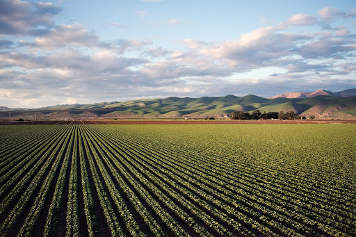
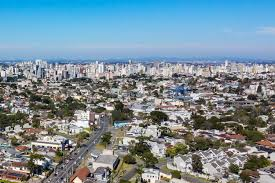

Área Rural
Regiões dedicadas à agricultura, pecuária e preservação ambiental. São essenciais para abastecer a cidade com alimentos e recursos naturais.
- Produção de alimentos
- Preservação do meio ambiente
- Espaços mais naturais e tranquilos
Área Urbana
Ambientes com alta densidade populacional, infraestrutura, serviços e indústrias. Dependem diretamente da zona rural para alimentação e recursos.
- Maior concentração de serviços
- Centros de consumo
- Educação, saúde e tecnologia